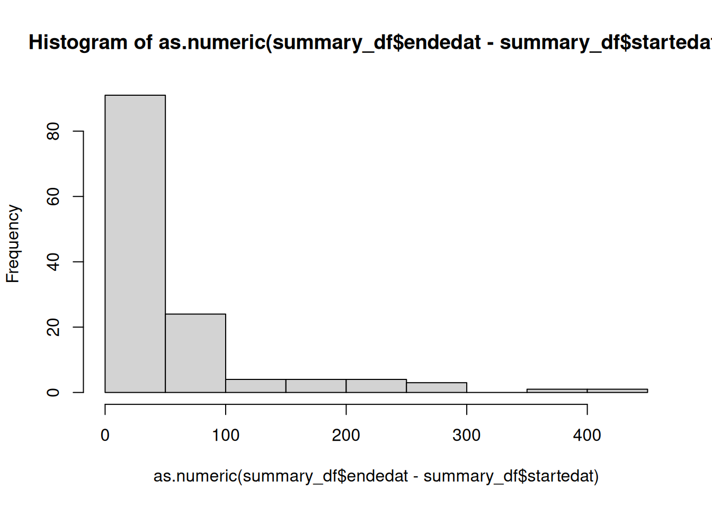

library(BiocBuildDB)
reportdb_filename = 'reportdb.csv'
dir.create('report_dir')
process_all_new_reports(reportdb_filename, 'report_dir')Building and Processing BiocBuildDB Reports
2025-12-31
Overview
The BiocBuildDB package provides functionality to process build reports generated by the Bioconductor build system. These reports are typically created during the continuous integration and testing of Bioconductor packages.
Note
This vignette documents INTERNAL functionality of the
BiocBuildDBand is, in general, not intended for end users.In general, the build report processing is not something that an end user will need to pay any attention to. However, the automation and processing scripts are also included in the package directory and detailed below.
Build report processing
To process all new build reports (those that changed since the last processing), you can use the following code:
If the reportdb.csv file does not exist, it will be created. If it does exist, it will be read and updated after successfully localizing (copying) the new report.tgz files to the report_dir directory.
The process_all_new_reports function will untar each report.tgz file and create a set of tables from the report directory. The tables will be written to files in the report_dir directory with the md5 hash of the report directory as a prefix.
The result will be a report_dir directory with a set of csv files containing the tables from the report directories as well as the report.tgz files. Related files are named with the same md5 hash prefix of the report.tgz file.
An example resulting directory might look like:
-rw-r--r-- 1 seandavis staff 472K Feb 2 11:20 2cc2a659a35d607f71655f3c9c9e4283-build_summary.csv.gz
-rw-r--r-- 1 seandavis staff 87K Feb 2 11:20 2cc2a659a35d607f71655f3c9c9e4283-info.csv.gz
-rw-r--r-- 1 seandavis staff 37K Feb 2 11:20 2cc2a659a35d607f71655f3c9c9e4283-propagation_status.csv.gz
-rw-r--r-- 1 seandavis staff 50M Feb 2 11:18 2cc2a659a35d607f71655f3c9c9e4283-report.tgz
-rw-r--r-- 1 seandavis staff 2.9K Feb 2 11:20 2e6b75f554d439ba3dc993e77862a973-build_summary.csv.gz
-rw-r--r-- 1 seandavis staff 2.2K Feb 2 11:20 2e6b75f554d439ba3dc993e77862a973-info.csv.gz
-rw-r--r-- 1 seandavis staff 514B Feb 2 11:20 2e6b75f554d439ba3dc993e77862a973-propagation_status.csv.gz
-rw-r--r-- 1 seandavis staff 202K Feb 2 11:18 2e6b75f554d439ba3dc993e77862a973-report.tgz
-rw-r--r-- 1 seandavis staff 497K Feb 2 11:20 354e509ee0e71215f7669fda8bad0246-build_summary.csv.gz
-rw-r--r-- 1 seandavis staff 94K Feb 2 11:20 354e509ee0e71215f7669fda8bad0246-info.csv.gz
-rw-r--r-- 1 seandavis staff 40K Feb 2 11:20 354e509ee0e71215f7669fda8bad0246-propagation_status.csv.gz
-rw-r--r-- 1 seandavis staff 70M Feb 2 11:18 354e509ee0e71215f7669fda8bad0246-report.tgzAfter running this, you may want to sync the report_dir directory with a cloud storage service such as Amazon S3 or Google Cloud Storage for safe keeping.
Work with a report.tgz file (just FYI)
You shouldn’t need to use this functionality directly, but it is here to show how the package works and some example output in the tables.
Show an example of how to work with a report.tgz file.
library(BiocBuildDB)
report_tgz <- example_report_tgz()
report_dir <- untar_report_tgz(report_tgz)
summary_df <- get_build_summary_table(report_dir)
info_df <- get_info_table(report_dir)
prop_df <- get_propagation_status_table(report_dir)Show the first few rows of each table.
head(summary_df)# A tibble: 6 × 9
package node stage version status startedat endedat
<chr> <chr> <chr> <chr> <chr> <dttm> <dttm>
1 AHCytoBands nebb… buil… 0.99.1 OK 2024-01-17 10:31:13 2024-01-17 10:31:14
2 AHCytoBands nebb… chec… 0.99.1 OK 2024-01-17 10:35:23 2024-01-17 10:35:31
3 AHCytoBands nebb… inst… 0.99.1 OK 2024-01-17 10:30:08 2024-01-17 10:30:11
4 AHEnsDbs nebb… buil… 1.1.10 OK 2024-01-17 10:31:13 2024-01-17 10:32:01
5 AHEnsDbs nebb… chec… 1.1.10 OK 2024-01-17 10:35:23 2024-01-17 10:37:24
6 AHEnsDbs nebb… inst… 1.1.10 OK 2024-01-17 10:30:23 2024-01-17 10:30:49
# ℹ 2 more variables: command <chr>, report_md5 <chr>
colnames(summary_df)[1] "package" "node" "stage" "version" "status"
[6] "startedat" "endedat" "command" "report_md5"
head(info_df)# A tibble: 6 × 9
Package Version Maintainer MaintainerEmail git_url git_branch git_last_commit
<chr> <chr> <chr> <chr> <chr> <chr> <chr>
1 AHCytoB… 0.99.1 Michael L… michafla at ge… https:… RELEASE_3… 821428c
2 AHEnsDbs 1.1.10 Johannes … johannes.raine… https:… RELEASE_3… 1cf652d
3 AHLRBas… 0.99.3 Koki Tsuy… k.t.the-answer… https:… RELEASE_3… c0e6555
4 AHMeSHD… 0.99.6 Koki Tsuy… k.t.the-answer… https:… RELEASE_3… 052e156
5 AHPathb… 0.99.5 Kozo Nish… kozo.nishida a… https:… RELEASE_3… a90bfd4
6 AHPubMe… 0.99.8 Koki Tsuy… k.t.the-answer… https:… RELEASE_3… f43d98f
# ℹ 2 more variables: git_last_commit_date <dttm>, report_md5 <chr>
colnames(info_df)[1] "Package" "Version" "Maintainer"
[4] "MaintainerEmail" "git_url" "git_branch"
[7] "git_last_commit" "git_last_commit_date" "report_md5"
head(prop_df)# A tibble: 6 × 4
package process propagate report_md5
<chr> <chr> <chr> <chr>
1 AHCytoBands source UNNEEDED, same version is already published f8fd2897c…
2 AHEnsDbs source UNNEEDED, same version is already published f8fd2897c…
3 AHLRBaseDbs source NO, version to propagate (0.99.3) is lower t… f8fd2897c…
4 AHMeSHDbs source NO, version to propagate (0.99.6) is lower t… f8fd2897c…
5 AHPathbankDbs source UNNEEDED, same version is already published f8fd2897c…
6 AHPubMedDbs source NO, version to propagate (0.99.8) is lower t… f8fd2897c…
colnames(prop_df)[1] "package" "process" "propagate" "report_md5"Present a histogram of build times (in seconds) for the packages in the example build report.
hist(as.numeric(summary_df$endedat - summary_df$startedat))